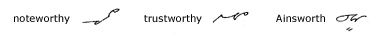

|
Method of Expressing
R
161. A
circle or loop is written with the left motion to express r
following the vowel.

Note: The circle is placed above
the next stroke after p and b, as in burn
and bird, and below the next stroke in all others, as in
charm and farm.
There is a tendency in rapid writing to curve
a straight line when it is followed by a circle. Therefore
the distinctive method of joining the circle when it is written
with left motion after straight strokes is adopted to prevent any
possibility of misreading. Compare germ and bird
in the following drill.
162. Word Drill
163.
Between a horizontal and an upward stroke the circle is turned
with a left motion on the upward stroke to express r following
the vowel:

164.
Before straight lines, s in ser, cer,
sar, and th in ther, thir, may
be written contrary to the usual method of joining to express r:

165.
R Omitted. In many words containing ar,
er, or, ir, as in the words large,
serve, warm, sort, firm, circle,
and corner, the r is omitted.
In applying this principle, advantage is simply
taken of dropping a sound that ordinarily is not stressed in speaking.
166. Word
Drill

*The syllables tern and
dern are expressed by ten.
167.
The termination worthy, as in noteworthy
and trustworthy, is expressed by thi; worth,
by uth, thus:

168.
The Syllable Ther. The syllable ther,
as in either and other, is conveniently expressed
by the sign for th:

*The left-motion th is
used in father to distinguish this word from faith,
which otherwise would have the same form.
169. Reading
and Dictation Practice
Transcription Key to this
Unit
- Next Unit - |